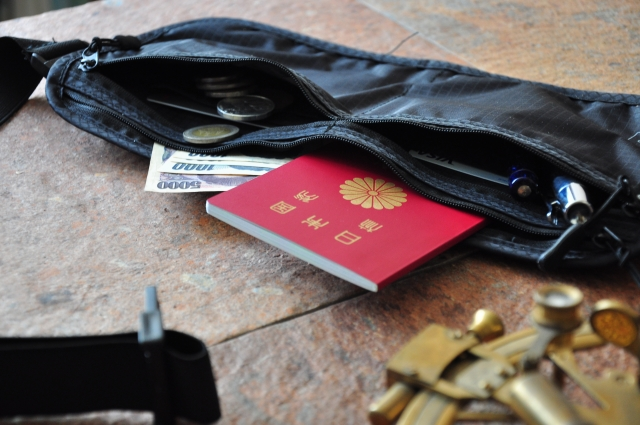

海外旅行での両替と現地でのカードと現金の使い分け

現地での両替について
海外旅行で意外とネックなのが現地での両替ですよね。基本は到着した空港で両替するのがお勧めです。多少レートが悪くてもトラブル無くスムーズに両替できます。ただ両替の為の行列がすごい場合があるので、事前に両替がある場所を調べておくと安心だと思います。 私は行列に並ぶのが嫌なので、以前は「シティバンク」現在は「SMBC信託銀行プレスティア」と呼ばれる銀行の口座に日本円でお金を預け、到着した空港や現地のATMで現地通貨を引き出しています。 ATMでの引き出しなので行列に並ぶ事は少ないです。引き出し時に手数料がかかるのでその点は注意ですが大量の現金を持ち歩く必要が無いので安心です。ただしキャッシュカードの紛失には要注意です。 口座を持っていない方はクレジットカードを使ってのキャッシングが便利だと思います。こちらも手数料が気になりますが、時間や安心をお金で買っていると思えば便利なのではと思います。 両替所やATMで現金を手にした際、小銭が少ない場合があります。現地では大きな金額の紙幣は嫌われる傾向がありますのでなるべく空港内で小銭にくずすようにしましょう。 空港内であれば嫌な顔をされる事は少ないです。私は近く売店やカフェで飲み物を買ったり、空港から市内へ移動するのであれば、あえて有人窓口で切符を買ったりして小銭をGETしています。旅行先での支払いはカード一択
メジャーな観光地にしか行かないのですが、支払いはカードで済ませる事が多いです。 最近は日本でもそうですが、海外だと少額でもカード払いは受入れられるのでとても便利です。 ブランドは圧倒的に「VISA」だと思います。「MASTER」もたまに見かけますが「JCB」は見た事無い気がします。 日本でいう「PayPay」などの電子マネーはアプリのインストールが必要なのと何かあった場合の対応が面倒なので、カード一択で問題ないと思います。小銭も必要
海外ではいわゆる「公衆トイレ」が有料の場合が多いです。だいたいが有人でスタッフの方に使用料を払う仕組みになっています。 お釣りがもらえる事もあるかもですがきっちり現金でという場合が圧倒的に多かったです。 チップを払う習慣がある国は避けているので分かりませんが、チップ用にもある程度の小銭は必要だと思います。 最近は電子マネー化されているかもですが、ちょっと田舎に行けばまだまだ現金主義の可能性が高いのではと思います。 お財布のあれこれ
普段はブランドのお財布を使っていますが旅行に行く時は100均のお財布を使っています。 海外ではブランド品は目立ちますし紛失した時にダメージが少ないのがいいですね。 南米旅行ではセキュリティポーチが役に立ちました。 お札・小銭・カード・パスポートなど、大事な物をまとめて入れておけるので管理が楽でした、 海外ではいつ何時でも貴重品を身に着ける事が必要で、例えばドミトリーでシャワーを使う際でも気軽に持って行けたのでお勧めです。 次は、海外旅行でのトラブルについてです 海外旅行にトラブルはつきもの…ささいな事は気の持ちようで乗り越える！スポンサーリンク